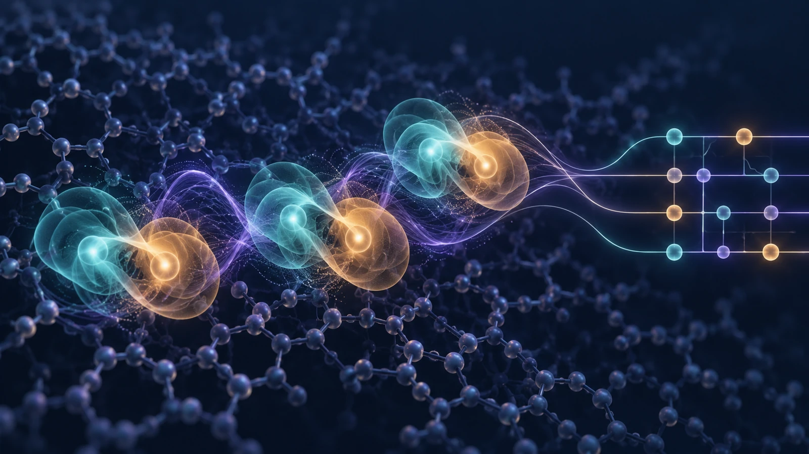
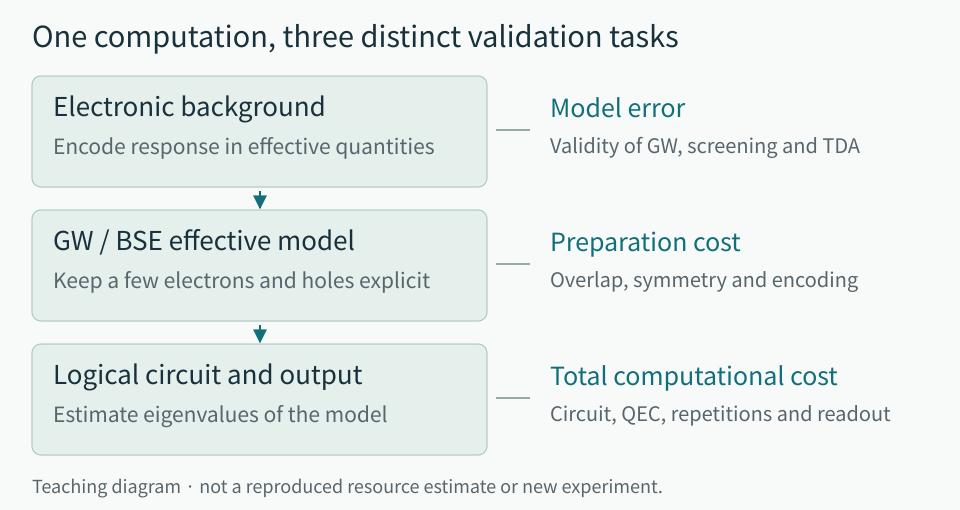
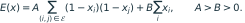

From Excitons to Optimal Solutions: How Physical Structure Changes Quantum Resource Costs
The Bethe–Salpeter description of multiple excitons, structure-aware annealing and state preparation, and the conditions for a fair comparison
RESEARCH LETTER · OCTOBER 6, 2026 · A guide for readers with a background in physics

Contents
- 1. Must we calculate every electron in a material?
- 2. An exciton is a two-particle problem with a background built in
- 3. What remains after a large resource reduction?
- 4. Quantum annealing: one good solution and many good solutions are different objectives
- 5. State preparation: a shorter circuit does not eliminate the cost of its starting point
- 6. What a comparison means physically: two cautions from QML and error correction
- 7. Bring the order of validation into your research—not just the numbers
- References and primary sources
1. Must we calculate every electron in a material?
Consider an electron and a hole meeting in an OLED and emitting light. Their positions alone do not tell us enough. We want to know how strongly they bind, how their energy depends on spin, and how they lose energy when they encounter another excitation. These questions involve the collective response of the electrons around them. Describing that response, however, does not always require tracking every electron explicitly.
Many physical models exploit this distinction. They absorb complicated background motion into an effective mass or a dielectric response, leaving only a few degrees of freedom explicit. A quasiparticle is not an extra fundamental particle: it is an effective excitation whose motion incorporates the response of its surroundings. A successful effective model can substantially reduce the calculation. But if omitted physics controls the observable, solving that model accurately still will not predict the experiment accurately.
This issue asks: what changes when we use physics and problem structure to redefine the calculation before passing it to a quantum computer? A new BSE quantum-simulation study applies this strategy to excited states in materials. Annealing and state-preparation studies use graph structure and entanglement structure. The QML and error-correction examples that follow show why a structural improvement also needs carefully designed comparison conditions.
2. An exciton is a two-particle problem with a background built in
When light excites an electron, a hole remains in a previously occupied state. The hole is an absence of an electron described as a particle, rather than a separate positively charged fundamental particle. Coulomb attraction correlates the electron and hole. The difference between the energy of independent particles and that of a bound excitation contains information about exciton binding.
The surrounding electrons and the polarization of the material cannot simply be ignored. The bare Coulomb interaction in vacuum differs from the effective interaction inside matter. The GW approximation estimates the electronic self-energy using the Green function  , which describes electron propagation, and the screened interaction
, which describes electron propagation, and the screened interaction  . The Bethe–Salpeter equation (BSE) then describes correlated electron–hole excitations built from these quasiparticles. The new work translates an established physical description from materials calculations into a quantum algorithm. [6]
. The Bethe–Salpeter equation (BSE) then describes correlated electron–hole excitations built from these quasiparticles. The new work translates an established physical description from materials calculations into a quantum algorithm. [6]
A standard schematic form for a single electron–hole pair makes the physics concrete. This equation explains the content of BSE; it is not the new paper’s resource formula.
![\sum_{v'c'}\left[(\varepsilon_c-\varepsilon_v)\delta_{vv'}\delta_{cc'}+K_{vc,v'c'}\right]A^S_{v'c'}=\Omega_S A^S_{vc}.](math_02.svg)
Here  denotes an occupied state and
denotes an occupied state and  an unoccupied state. The difference is the independent-quasiparticle excitation energy. The kernel
an unoccupied state. The difference is the independent-quasiparticle excitation energy. The kernel  contains direct electron–hole interactions and exchange. The amplitude specifies how much each electron–hole combination contributes to excited state
contains direct electron–hole interactions and exchange. The amplitude specifies how much each electron–hole combination contributes to excited state  , while
, while  is its energy. The relevant question is which correlations are restored on top of the independent-particle energies, not merely what we call the state or how many qubits represent it.
is its energy. The relevant question is which correlations are restored on top of the independent-particle energies, not merely what we call the state or how many qubits represent it.
Screening of the direct interaction should not be conflated with exchange. In this study, direct interactions include screening, while electron–hole exchange uses a bare Coulomb term. The spin dependence of exchange is important for understanding singlet–triplet energy differences. Multiple excitons also require electron–electron and hole–hole interactions. A single electron–hole binding energy therefore cannot stand in for all correlations among several excitations. [1]

Where this connects to OLED research—and where it does not yet
For OLED researchers, this framework is appealing because it could connect singlet–triplet splitting, the spatial character of excitations, and correlations between multiple excitations within one computational language. The present paper, however, does not validate emission efficiency or lifetime in OLED molecules or devices. Nor does the framework automatically include structural relaxation, environmental polarization, spin–orbit coupling, vibrational coupling, or nonradiative pathways in organic materials. This connection is an application interpretation offered by the reviewer.
The first question is therefore whether the BSE approximation is appropriate for the observable of interest, and what additional physics it needs. A model that reproduces an energy gap may face different requirements from one that reproduces a reverse intersystem-crossing rate. Narrowing a singlet–triplet gap and extending device lifetime are distinct validation tasks.
3. What remains after a large resource reduction?
Chen, Sun, and Chan construct a BSE Hamiltonian that keeps a small number of electrons and holes explicit. They use a first-quantized orbital representation, integral factorization, and crystal symmetry to reduce quantum-circuit resources. A triexciton contains three electrons and three holes. This is distinct from a spin triplet; it is neither a three-qubit calculation nor a calculation of every electron in the material. The study estimates future fault-tolerant resources under static self-energy, static screening, and Tamm–Dancoff approximations. It reports no actual QPU execution. [1]
Consider the diamond example with  , corresponding to a 2,000-atom model. The target precision is 0.1 eV per eigenvalue. The few-hundred-logical-qubit setting and the minimum-gate-cost setting are different choices.
, corresponding to a 2,000-atom model. The target precision is 0.1 eV per eigenvalue. The few-hundred-logical-qubit setting and the minimum-gate-cost setting are different choices.
| Computational setting | Logical qubits | Toffoli count |
|---|---|---|
| BSE, Toffoli-optimized | 33,000 |  |
| BSE, qubit-optimized | 266 | |
| Full-Hamiltonian second-quantized baseline | — | |
| Full-Hamiltonian first-quantized baseline | — |
Source: [1], Fig. 3 and resource tables. This compares quantum-algorithm resource estimates, not classical execution times: a BSE excitation energy versus full-Hamiltonian supercell total energies, excluding constant overheads for energy differences. The second-quantized baseline uses an active-electron orbital model; the first-quantized baseline uses an 80 Ry pseudopotential plane-wave model. “Full” means the Hamiltonian before BSE reduction, not a pseudopotential-free all-electron calculation. The baselines do not exhaust the latest algorithms.
The qubit-optimized setting uses roughly 36 times as many Toffoli gates. This is a familiar space–time tradeoff: saving storage can require more frequent data access or repeated computation. Logical qubits also differ from physical qubits. Translating this table into a device size or runtime requires an error-correction code, a target failure probability, logical-gate throughput, magic-state supply, and routing. The table alone cannot establish a practical execution time.
Why does this representation fit in a small register? Let  be the number of electron–hole pairs and
be the number of electron–hole pairs and  the scale of the orbital choices available to one particle. The naive product space has dimension on the order of , while binary registers storing each particle’s orbital index require approximately
the scale of the orbital choices available to one particle. The naive product space has dimension on the order of , while binary registers storing each particle’s orbital index require approximately  bits. At fixed , the representation is therefore compact. This does not make reading every amplitude inexpensive. Register size and the time needed to obtain a useful answer are different quantities. This pedagogical dimension count omits antisymmetrization, symmetry, and auxiliary registers; it is not the formula used to obtain the qubit counts in the table.
bits. At fixed , the representation is therefore compact. This does not make reading every amplitude inexpensive. Register size and the time needed to obtain a useful answer are different quantities. This pedagogical dimension count omits antisymmetrization, symmetry, and auxiliary registers; it is not the formula used to obtain the qubit counts in the table.
Another substantial omission is initial-state preparation. Phase estimation needs an input with sufficient overlap with the desired eigenstate. Small overlap can require more repetitions and change the total cost. The physical approximation error of the BSE model is also separate from the numerical eigenvalue precision of 0.1 eV. Running a circuit longer cannot restore physics omitted from its Hamiltonian. [1]
In general, block encoding embeds a Hamiltonian as in part of a larger unitary. The parameter is the normalization scale. A schematic cost ledger for phase estimation includes the following terms. [7]
This is an explanatory expression for the review, not the paper’s detailed resource formula. Every must be expressed in the same normalized cost or time unit; CPU operations and Toffoli counts cannot be added directly. Here is one-time classical preprocessing,  is state preparation on each attempt, and
is state preparation on each attempt, and  is the cost of one quantum-walk operation. The energy precision is
is the cost of one quantum-walk operation. The energy precision is  , is the repetition factor needed to achieve the desired success probability, and
, is the repetition factor needed to achieve the desired success probability, and  is the total output and postprocessing cost. Reducing a gate cost, reducing the normalization scale, and simplifying state preparation are distinct improvements. The paper’s large reductions constitute a significant design advance; they do not mean that classical materials calculations have already been replaced.
is the total output and postprocessing cost. Reducing a gate cost, reducing the normalization scale, and simplifying state preparation are distinct improvements. The paper’s large reductions constitute a significant design advance; they do not mean that classical materials calculations have already been replaced.
4. Quantum annealing: one good solution and many good solutions are different objectives
The minimum vertex cover (MVC) annealing study illustrates this distinction. We choose as few vertices as possible while ensuring that every edge touches at least one chosen vertex. This can serve as a simplified model for production, placement, or resource-allocation problems, but the paper does not solve the schedule of a particular factory. [2]
For illustration, let the binary variable mean that vertex is selected. One possible QUBO is

The first term penalizes uncovered edges; the second charges for selected vertices. Adding an endpoint of an uncovered edge costs  but removes a penalty of at least
but removes a penalty of at least  , so an optimal solution leaves no edge uncovered. Several vertex sets may share the same minimum size. When downstream constraints have not yet been settled, a diverse collection of equally optimal candidates can itself be useful.
, so an optimal solution leaves no edge uncovered. Several vertex sets may share the same minimum size. When downstream constraints have not yet been settled, a diverse collection of equally optimal candidates can itself be useful.
The study changes this sampling diversity on Advantage2 by delaying the anneal progression of high-degree vertices. The 120 paired comparisons use BA ,  , and 1,000 reads per protocol, against a zero-offset baseline with the same embedding. The mean number of distinct certified optimal covers rises from 171.7 to 455.8, and Hamming-distance families from 22.5 to 80.0. Certification requires a feasible cover whose cardinality matches the HiGHS ILP minimum. Families are complete-linkage clusters at , not measurements of dynamical basins. [2]
, and 1,000 reads per protocol, against a zero-offset baseline with the same embedding. The mean number of distinct certified optimal covers rises from 171.7 to 455.8, and Hamming-distance families from 22.5 to 80.0. Certification requires a feasible cover whose cardinality matches the HiGHS ILP minimum. Families are complete-linkage clusters at , not measurements of dynamical basins. [2]
The limitations are clear. The direction reverses on 3-regular and ER graphs, with optimal-solution support in ER falling from 19.9 to 3.5. At , a comparison using 50,000 output samples finds 19,040.15 distinct optimal solutions for classical simulated annealing, exceeding the method’s 15,929.55. Although this is not a time-normalized comparison, it supplies no basis for a claim of quantum acceleration or generally superior diversity. [2]
An application should evaluate the minimum objective value, constraint satisfaction, candidate diversity, and total processing time separately. A control rule that helps one graph structure may hurt another. Exploiting problem structure entails identifying the structures on which the method actually works.
5. State preparation: a shorter circuit does not eliminate the cost of its starting point
ASPIRE classically designs a state-preparation circuit using an MPS (matrix product state) representation of the target and the device’s connectivity. It aims to remove long-range entanglement more efficiently and arrange allowed operations in parallel. Cases with long-range correlations generally yield shallower, more accurate circuits, but some nearest-neighbor-only conditions tie or underperform the comparison method. There is no actual QPU execution. [3]
An MPS is a classical representation whose bond dimension limits the number of Schmidt components needed when the system is split into two parts. It can avoid storing the entire state vector, at the cost of restrictions on the entanglement it represents. If a tractable MPS is already available, that structure can guide circuit construction. This does not make an arbitrary difficult target state inexpensive to discover. Obtaining and compressing the target, and optimizing the circuit, also belong in the cost ledger.
Noise evaluations for the 30-qubit examples are simulations. The 12-qubit hardware-learned noise model likewise does not constitute an actual QPU run. Single-qubit gates are treated as noiseless, and circuits are selected using noiseless MPS calculations. The small error rate  is a prospective condition, not a current operating point. [3] ASPIRE consequently cannot be assumed to supply the state-preparation cost omitted by the BSE paper. Particle symmetry, the target state, initial overlap, and connectivity would need separate validation for that connection.
is a prospective condition, not a current operating point. [3] ASPIRE consequently cannot be assumed to supply the state-preparation cost omitted by the BSE paper. Particle symmetry, the target state, initial overlap, and connectivity would need separate validation for that connection.
6. What a comparison means physically: two cautions from QML and error correction
When normalization changes the meaning of robustness
The quantum-attention audit uses a four-qubit exact statevector and synthetic power-grid trajectories. The ranking of input-scaling choices reverses depending on how the attack budget is matched. Neither comparison establishes a causal robustness benefit from scaling itself. There is no actual QPU or field power-grid validation. [4]
Let be the input and  its encoding. A small perturbation
its encoding. A small perturbation  in the physical input produces an encoded change of approximately . Scaling also changes this Jacobian. Holding fixed asks how the model tolerates a perturbation in physical input units. Matching an upper bound on the encoded change compares the perturbation budget received by the circuit. The paper matches an encoder-sensitivity bound, not the actual distance between quantum states. The comparisons thus answer different questions. A preprocessing step that compresses a perturbation does not, by itself, establish that a quantum learner is safer.
in the physical input produces an encoded change of approximately . Scaling also changes this Jacobian. Holding fixed asks how the model tolerates a perturbation in physical input units. Matching an upper bound on the encoded change compares the perturbation budget received by the circuit. The paper matches an encoder-sensitivity bound, not the actual distance between quantum states. The comparisons thus answer different questions. A preprocessing step that compresses a perturbation does not, by itself, establish that a quantum learner is safer.
The same issue arises in OLED spectra and process sensors. Without fixing units, normalization, and encoder sensitivity, model architecture and preprocessing effects become entangled. An actual QPU implementation would additionally need to account for shots, noise, training time, and data-input costs.
Publication status also needs care. The authors state that the paper was accepted as a NeurIPS 2026 SaTQuML long oral. The official workshop is scheduled for December 12–13 and describes itself as non-archival, with no official proceedings. A public OpenReview accepted decision could not be independently checked because of access restrictions. This review therefore treats the paper as [preprint; workshop acceptance reported by the authors], not as a main-conference paper. [4,8]
Separating better postprocessing from better hardware
When one circuit fault causes three or more syndrome detection events, a matching graph built from pairwise links cannot fully express that correlation. SMP reads local patterns associated with these hyperedge faults and updates the matching graph’s weights while retaining the downstream matching solver. Its Willow result is a classical re-decoding of public experimental data, not a new QPU experiment. For a distance-7, 13-round memory under the SI1000 condition, the failure probabilities are 2.487% for correlated MWPM, 2.265% with SMP, and 2.026% for Harmony-51. SMP improves that MWPM baseline, while the Harmony-51 ensemble has a lower failure probability in the comparison table. These are whole-experiment, 13-round failure probabilities, not per-round error rates. [5]
Extracting correlated structure from a sensor’s residuals can improve diagnosis without changing the sensor. Decoder improvements and hardware improvements are similarly distinct. Low asymptotic preprocessing complexity also does not establish that decoding finishes within the actual control cycle. Connecting such a method to logical computation requires both error-rate and real-time latency measurements.
7. Bring the order of validation into your research—not just the numbers
The five studies do not assemble into one algorithm. Their platforms and tasks differ. What they share is that improvements become interpretable when the computational target and comparison conditions are specified. The following order is useful for OLED, DFT, and ML research, as well as optimization work.
| Define first | Question to check | Costs and baselines to record |
|---|---|---|
| Observable and physical model | Are we matching an energy, spin splitting, rate, or lifetime? | GW, BSE, and active-space approximations; experimental validation |
| Input and state preparation | How is the target state or feature representation obtained? | Classical preparation, compression, encoding, and initial overlap |
| Execution | QPU run, simulation, or reanalysis of public data? | Logical and physical qubits, gates, shots, and noise |
| Output and comparison | Does accuracy, optimal value, diversity, or failure probability improve? | Strong classical and existing quantum baselines; matched budgets |
| Practical value | Is the entire workflow faster and more reliable? | Wall-clock time, postprocessing, latency, failures, and retries |
This table is the reviewer’s proposal, not a list of experiments performed by all five papers. In particular, physical-model error, numerical-solution error, and device error should not be collapsed into a single “accuracy.” The cost of making the problem smaller and the benefit of solving it better need separate assessments.
The BSE study’s most practical message is that quantum computers, too, need physical approximations. An approximation is not merely a weakness. Once validated, it can become a resource-saving design principle. Yet how accurately we solve a model and how accurately that model describes the material remain separate questions throughout.
References and primary sources
- Chen, J.; Sun, J.; Chan, G. K.-L. Quasiparticle quantum simulation of materials with the Bethe-Salpeter equation. arXiv:2610.02916v1. Submitted October 2, 2026. Full text · Bibliography and versions.
- Kang, J.; Han, N. Degree-conditioned anneal offsets reshape certified-optimum sampling for minimum vertex cover. arXiv:2610.03379v1. Submitted October 2, 2026. Full text · Public code and data v1.0.0.
- Hasselgren, F.; Sims-Goh, M. L. Breaking the chain: geometry-native state preparation with ASPIRE. arXiv:2610.03528v1. Submitted October 2, 2026. Paper PDF · Bibliography and versions.
- Friedewald, O.; Alla, S.; Shiri Sichani, A.; Shyu, C.-R. When Normalization Selects the Sign: Auditing Robustness Ablations in Quantum Attention. arXiv:2610.02641v1. Submitted October 2, 2026. Full text · Bibliography and authors’ workshop statement. The authors’ Figshare link uses private access rather than a permanent public identifier; continued public availability of the code is not assured.
- Wang, S.; Yan, Y.; Xia, Z.; Shi, C.; Yuan, H.; Wang, X.-B. SMP: A General Hyperedge-Based Framework for Circuit-Level Quantum Error Correction. arXiv:2610.02734v1. Submitted October 2, 2026. Full text · Bibliography and versions.
- Onida, G.; Reining, L.; Rubio, A. Electronic excitations: density-functional versus many-body Green's-function approaches. Rev. Mod. Phys. 74, 601 (2002). DOI. Background for the GW/BSE explanation, not a recent result.
- Low, G. H.; Chuang, I. L. Hamiltonian Simulation by Qubitization. Quantum 3, 163 (2019). Full text · DOI. Background for block encoding and precision costs.
- SaTQuML 2026. Official workshop · OpenReview group. The dates and non-archival policy were checked; paper-specific acceptance decisions could not be independently verified.
Further reading: VQE principles, subspace methods, and digital validation · Triplet-level control and molecular inverse design for blue OLEDs